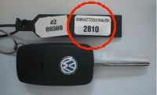

Programming keys
V.A.G
When programming new keys in to V.A.G you must have all keys available, old and new, before programming. All keys have to be programmed.
Only for 4 and 5 digit security code!
Step by step instructions:
Read out, repair and erase eventual fault codes. Fault codes for the immobilizer system must be repaired and erased before the programming of keys can be continued.
Collect all keys that are going to be programmed/used with the vehicle.
Scratch off the coat to get the four or five digit security code,

Enter the four or five digit security code, press OK and wait for confirmation. If wrong security code is entered two times in a row the immobiliser ECU will be locked for 30 minutes. Before next try, the ignition has to be “on“ for 30 minutes.
Enter number of keys 1 – 8 that are going to be programmed into the system. Press OK and wait for confirmation.
The key in the ignition switch is programmed after 2 seconds (after the check-lamp is turned off). The time for programming the remaining keys now start, maximum 30 seconds. Every key has to be in the ignition switch, with ignition on for 2 seconds (until the check-lamp is turned off) and then removed.
Programming of keys are aborted/complete when:
Number of keys that was supposed to be programmed has been programmed.
A key that already has been programmed during the operation is reprogrammed. The programming sequence has to restart.
The maximum time for programming is exceeded.